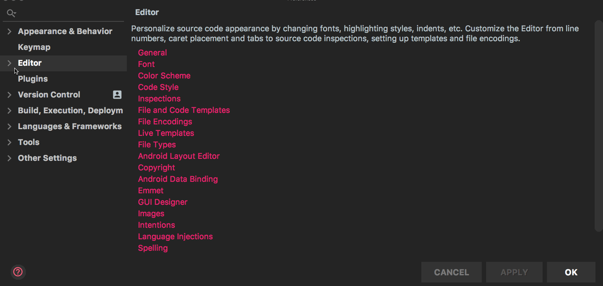
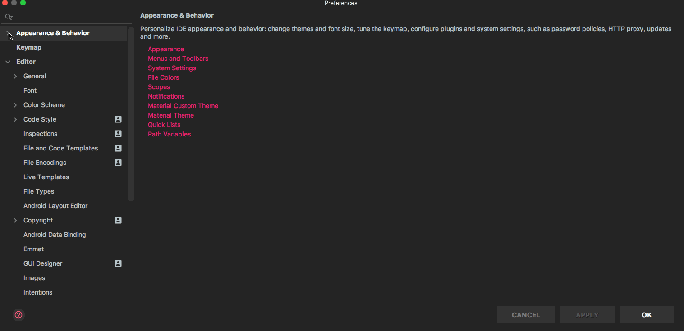
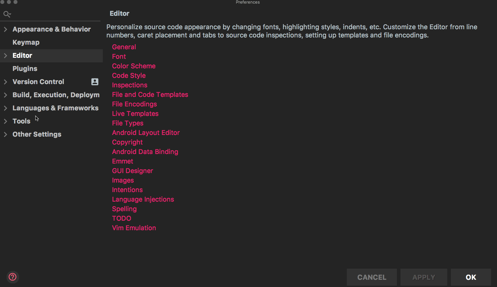

IntelliJの必須設定の一覧
IntelliJでこれだけはインストール時にやっておいたほうが良いと思っている設定です。
スペースを表示させる
エディタ内のスペースを表示させる設定です。
preference > Editor > General > Appearance > ON ‘Show whitespaces’

エディタ内の縦線を消す方法
まずエディタ内の縦線とは何かといいますと、右側にあるこいつです。

上記の縦線を消す設定はこちらです。
preference > Editor > General > Appearance > OFF ‘Show hard wrap guide’

エディタの文字サイズを変更する方法
preference > Editor > Font

エディタ全体の文字サイズを変更する方法
preference > Editor > Font

タブをスペースに変換する方法
preference > Editor > Code Style> Java > OFF ‘Use Tab character’
個人的にはスペース4つではなく、以下の設定でスペース2つにすることをおすすめします。
preference > Editor > Code Style> Java > ‘Indent 2’
